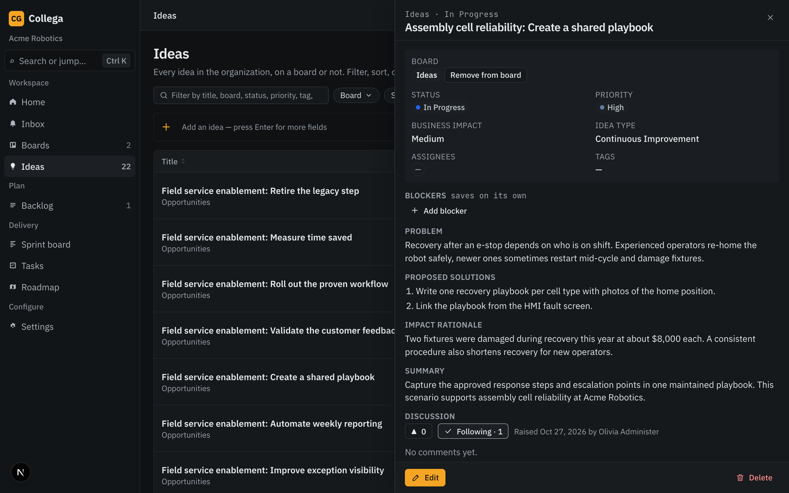

01 / CONTEXT
Give ideas shared context.
Capture the idea and the discussion around it, so the team can understand what matters and why.


IDEAS → COORDINATED DELIVERY
Turn ideas into coordinated delivery. WorkSprint brings shared context, boards and sprint planning together for cross-functional teams.
Requests are reviewed manually. Access isn’t immediate.
Product preview / A current sprint

THE APPROACH
Give ideas a place to take shape, organize work on shared boards, and plan what comes next in sprints. Keep the context visible as teams move toward delivery.
01 / CONTEXT
Capture the idea and the discussion around it, so the team can understand what matters and why.

02 / COORDINATION
Organize ideas and tasks on shared boards, with statuses that show where the work stands.

03 / DELIVERY
Bring tasks from the backlog into sprint planning and coordinate the next stretch of work.
Approved, unaltered app captures, framed with CSS crops. Collega branding remains pending recapture. Screenshot content is not a new WorkSprint claim; tenant names and custom logos are not replaced.
BETA / A FEW DETAILS
Cross-functional teams managing ideas through delivery, with shared context, boards and sprint planning.
Requests are reviewed manually, and applicants are contacted about access. A request doesn’t create an account, send an automatic confirmation email, or guarantee admission or an access date.
No. Personal and work email addresses are both accepted. Organization, team size and use case are optional.
No. Applicant details are intended only for beta-request review and beta-access communications, not a marketing subscription.
Tell us a little about yourself and how your team works. Requests are reviewed manually, and applicants are contacted about beta access.
Demo only. This concept does not collect or send your details. Please use sample information when exploring the form.